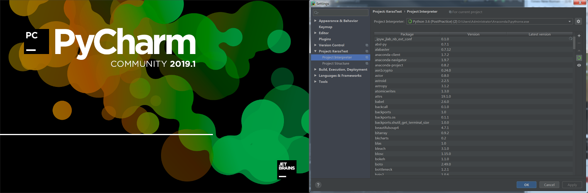
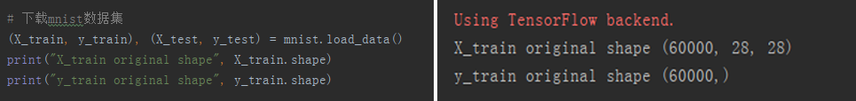
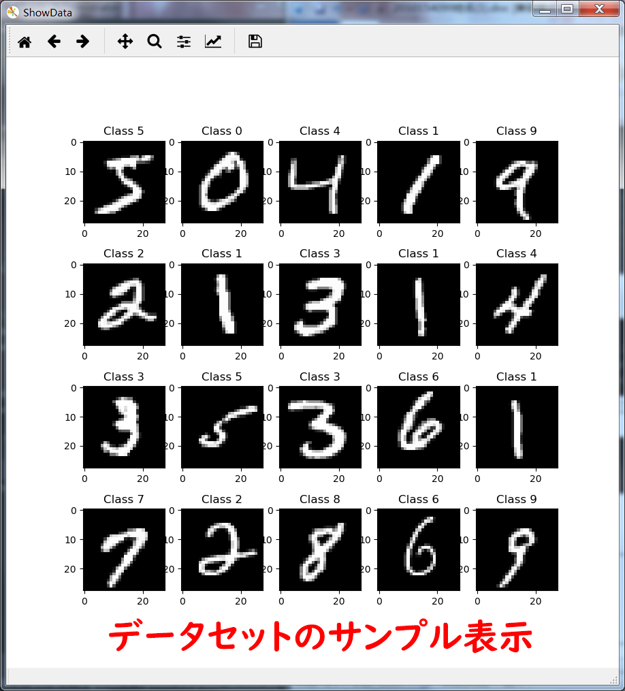
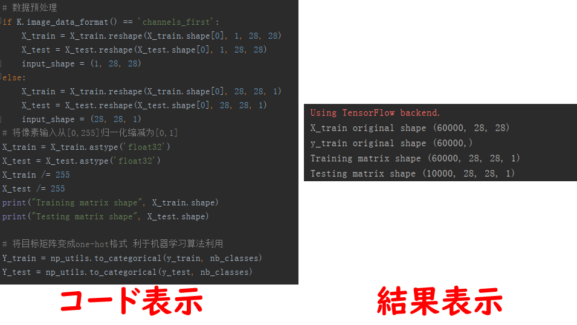
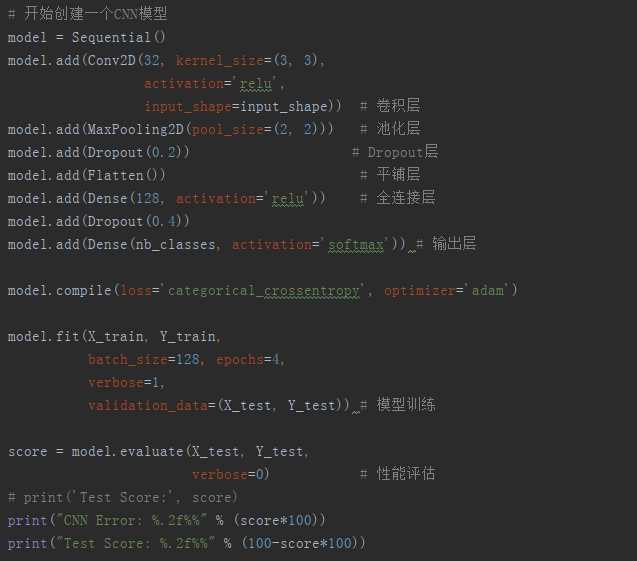

1.前言
このプロジェクトは、ディープラーニング関連の知識について最初に学習したコースで完成した最初のディープラーニング関連プロジェクトです。
2.事前準備
ディープラーニング関連のプログラミングは初めてなので、新しい開発環境とライブラリが必要です。そのため、最初にPyCharm IDEおよびKerasライブラリをダウンロードしてインストールしました。

次に、今度の実験で使用したデータセット、「MNIST」手書きデータセットをダウンロードします。

これは、ディープラーニングの入門用としてよく使用される非常に有名な手書き数字認識データセットで、60,000のトレーニングサンプルと10,000のテストサンプルが含まれています。

これで事前準備は完了です。
3.データ前処理
畳み込みニューラルネットワーク処理を容易にするために、手書きデータセットに対して特定の前処理を実行する必要があります。手書きデータセットの画像サイズは28x28で、グレースケールイメージであるため、ピクセルを正規化して[0,255]から[0,1]に縮小できます。次に、ターゲット行列がone-hotエンコーディング形式に変換されます。これは、その後のニューラルネットワークのエントロピー計算に役立ちます。

4.モデル構築と訓練
次に、畳み込みニューラルネットワークモデルの構築を開始します。ここでは、非常に単純な構造を構築しました：

1 Convolutional layer → 1 Max-pooling layer → 1 Dropout layer →
1 Flatten layer → 1 Full-connection layer → 1 Dropout layer →
Output layer
5.実験結果